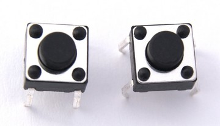
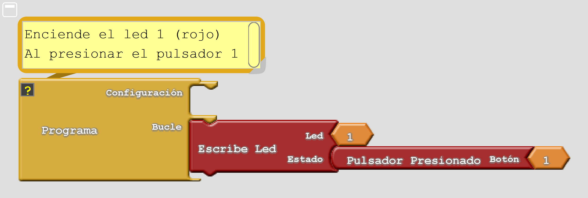
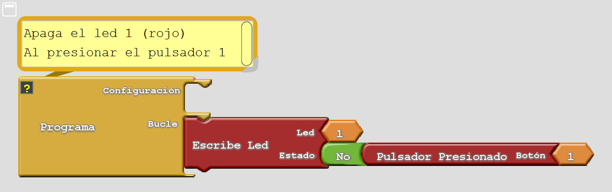
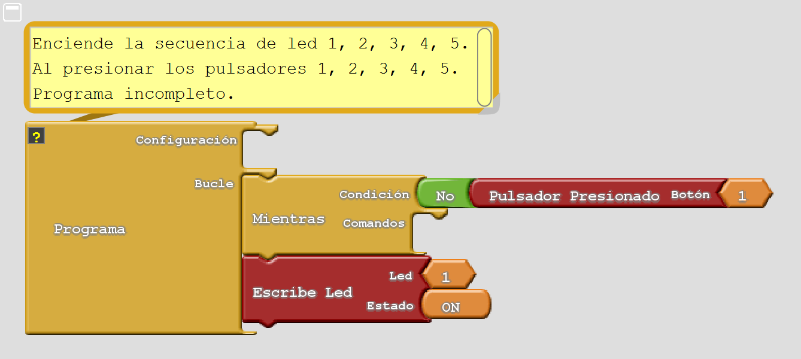
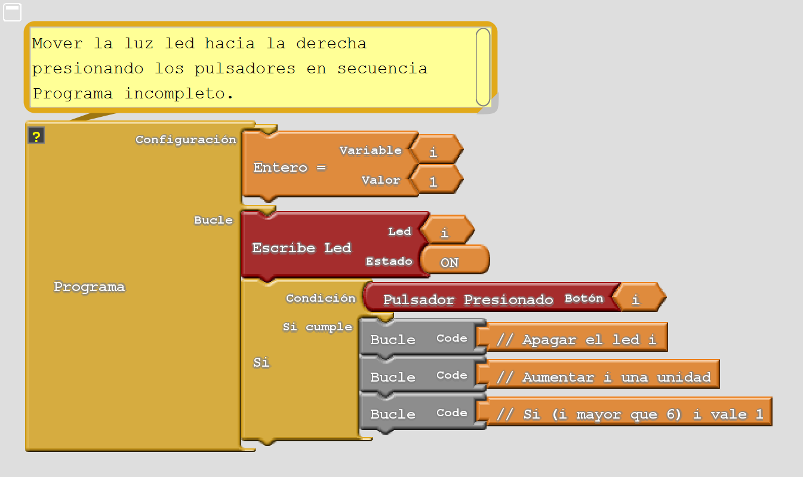
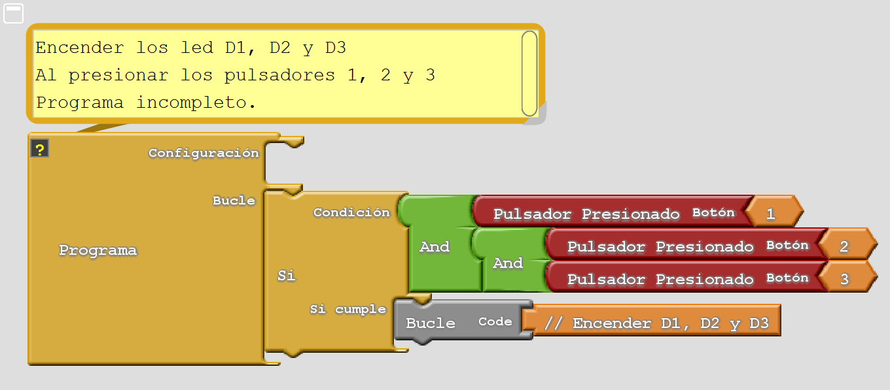
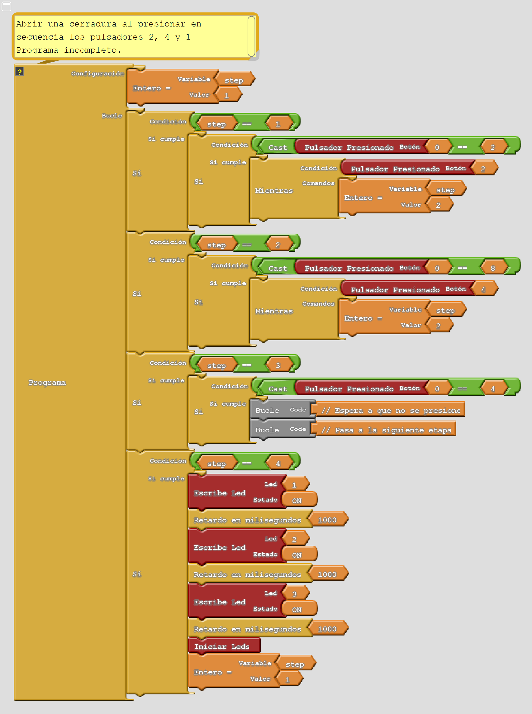

5. Buttons and States¶
{kind=link}
Goals¶
- Read the status of a button.
- Program Arduino to respond to user keystrokes.
PC42 control panel pushbuttons¶
The PC42 panel has a keyboard with six buttons. Each button is identified with a number or a constant that bears its name. The name of each button can be seen on the screen printing of the printed circuit. The six constants and numbers that represent the buttons are as follows.
Constant Button KEY_LEFT 1 KEY_RIGHT 2 KEY_DOWN 3 KEY_UP 4 KEY_ENTER 5 KEY_BACK 6
The key number will be represented in this manual as keyNum.
The keyPressed() function¶
-
int
keyPressed(int keyNum)¶ This function returns the value of a button. Returns the value 1 if the button is pressed and 0 if it is not. The value of this function filters out electrical noise and bounce.
Electrical noise is interference associated with electric motors, switches, modern energy-saving lamps or mobile phones. Any of these devices can cause a button to appear to be pressed for a brief moment even though it is not. It is highly recommended to filter this noise to avoid 'false' or 'ghost' keystrokes.
Bouncing is a phenomenon that causes the push button to not make contact for a short period of time, a few milliseconds, right after it is pressed because the sheet metal 'bounces' and stops making contact. This phenomenon can cause one click to be interpreted as two clicks, so it is recommended that you filter it to eliminate it.
The disadvantage of this noise filter is that this function has a 20 millisecond delay in responding from when the actual state of the switch changes to when it returns the correct value.
If the
KEY_ALLargument is used, the function returns a number that depends on the sum of the keys that are pressed.Button pressed Return value Return value (binary) KEY_LEFT 1 0b000001 KEY_RIGHT 2 0b000010 KEY_DOWN 4 0b000100 KEY_UP 8 0b001000 KEY_ENTER 16 0b010000 KEY_BACK 32 0b100000 If button 4 is pressed, the function will return the value 8. With button 6 pressed, the function will return the value 32. If both buttons 4 and 6 are pressed at the same time, the function will return the sum of 8 and 32 i.e. 40.
keyNum: número del 1 al 6 que representa al pulsador del que se solicita su valor. El valor 0 representa a todos los pulsadores juntos.Se pueden utizar también los valores predefinidos
KEY_LEFT,KEY_RIGHT,KEY_DOWN,KEY_UP,KEY_ENTER,KEY_BACKyKEY_ALL.
Turn on a led with a button¶
The following program will turn on led D1 when button 1 is pressed (KEY_LEFT)
1 2 3 4 5 6 7 8 9 10 11 12 13 14 15 | // Enciende el led D1 cuando se presione el pulsador 1
#include <Wire.h>
#include <PC42.h>
void setup() {
pc.begin(); // Inicializar el módulo PC42
}
void loop() {
int on_off;
on_off = pc.keyPressed(KEY_LEFT); // Lee el estado del pulsador 1
pc.ledWrite(1, on_off); // Enciende el led D1 si está
// presionado el pulsador 1
}
|
Equivalent program in the Ardublock environment:
{kind=link}
In this link you can download the program file for Ardublock environment 'keyPressed'
Turn off a led with a button¶
The following program will perform the opposite function to the previous one, it will turn off led D1 when button 1 is pressed (KEY_LEFT)
1 2 3 4 5 6 7 8 9 10 11 12 13 14 15 | // Apaga el led D1 presionando el pulsador 1
#include <Wire.h>
#include <PC42.h>
void setup() {
pc.begin(); // Inicializar el módulo PC42
}
void loop() {
int on_off;
on_off = pc.keyPressed(1); // Lee el estado del pulsador 1
pc.ledWrite(1, !on_off); // Enciende el led D1 si no está
// presionado el pulsador 1
}
|
The Arduino language allows you to write the last function of the above program in many other ways. These are some alternatives that achieve the same result.
1 2 3 4 5 6 7 8 9 10 11 12 13 14 15 16 17 | // Enciende el led D1 si el pulsador 1 no está presionado
// Función NOT lógico
pc.ledWrite(1, !on_off);
// Función Negación binaria
pc.ledWrite(1, ~on_off);
// Función resta
pc.ledWrite(1, 1-on_off);
// Funciones de comparación
pc.ledWrite(1, (on_off == 0));
pc.ledWrite(1, (on_off < 1));
// Función XOR
pc.ledWrite(1, on_off ^ 1);
|
As you can see, the Arduino language is very rich in expressions. Thanks to this it is a very powerful language and, in turn, complex to learn. For this reason, in the following examples the minimum number of logical expressions will appear, so as not to complicate learning.
The equivalent program in the Ardublock environment is simpler:
The keyValue() function¶
-
int
keyValue(int keyNum)¶ This function is similar to the
keyPressed()function seen above. Returns the value of a button. If the key is pressed, it returns the value 1; if the key is not pressed, it returns the value 0. This function does not filter out electrical noise like thekeyPressed()function does.This function returns the current state of the switch without a filter, and therefore can return false values caused by electrical noise or bouncing.
As an advantage, this function returns the value of the button without a time delay in the response.
keyNum: número del 1 al 6 que representa al pulsador del que se solicita su valor. El valor 0 representa a todos los pulsadores juntos.Se pueden utizar también los valores predefinidos
KEY_LEFT,KEY_RIGHT,KEY_DOWN,KEY_UP,KEY_ENTER,KEY_BACKyKEY_ALL.
Exercises¶
Program the code needed to solve the following problems.
Turn on led D1 with button 1 and turn off led D1 with button 2. Correct the syntactic errors of the following program. The most common errors are: forgetting the semicolon at the end of the statement, changing case, forgetting a bracket or parenthesis. Arduino helps to find errors in two ways. When typing a successful function, it appears in orange. When compiling the code, the lower window informs about the errors found.
1 2 3 4 5 6 7 8 9 10 11 12 13 14 15 16
// Programa con errores. // Enciende el led D1 con el pulsador 1 y // apaga el led D1 con el pulsador 2 #include <Wire.h> #include <PC42.h> void setup() { pc.Begin(); // Inicializar el módulo PC42 } void loop() { if (pc.keypressed(1)) // Si (pulsador 1 está presionado) pc.ledWrite(1, LED_ON); // Enciende led D1 if (pc.keypressed(2)) // Si (pulsador 2 está presionado) pc.ledWrite(1, LED_OFF) // Apaga el led D1
Turn on all the leds as follows. LED D1 will light up when button 1 is pressed. Then LED D2 will light up when button 2 is pressed. The program will continue in this way until 5 LEDs light up. Complete the program below.
1 2 3 4 5 6 7 8 9 10 11 12 13 14 15 16 17 18 19 20 21
// Programa incompleto. // Enciende todos los ledes uno a uno y por orden // con todos los pulsadores #include <Wire.h> #include <PC42.h> void setup() { pc.begin(); // Inicializar el módulo PC42 // Mientras (pulsador 1 no esta presionado), espera while (pc.keyPressed(1) == 0); // Enciende el led D1 pc.ledWrite(1, LED_ON); } void loop() { }
Equivalent program in the Ardublock environment:
When starting, led D1 will light up. When button 1 is pressed, led D1 will go out and the next led will light up. The light will thus move to the right up to led D5. By pressing button 5, LED D5 will turn off and LED D1 will turn on again. Complete the program below according to the comments.
1 2 3 4 5 6 7 8 9 10 11 12 13 14 15 16 17 18 19 20 21 22
// Programa incompleto. // Mover la luz de los ledes hacia la derecha // con los pulsadores #include <Wire.h> #include <PC42.h> int i; void setup() { pc.begin(); // Inicializar el módulo PC42 i = 1; // El primer led encendido es el 1 } void loop() { pc.ledWrite(i, LED_ON); // Enciende el led i if (pc.keyPressed(i)) { // Si (pulsador i está presionado) pc. // Apaga el led i i = // Aumenta i en una unidad if (i > 6) i = 1; // Si (i es mayor que 6) i vale 1 } }
Equivalent program in the Ardublock environment:
Modify the previous program so that the leds light up from D6 to D1. When it is time to turn off led D1, led D6 will light up again.
The three leds D1, D2 and D3 will turn on when the three buttons 1, 2 and 3 are pressed at the same time. It uses the '&&' operator that evaluates if two conditions occur at the same time. Complete the program below according to the comments.
1 2 3 4 5 6 7 8 9 10 11 12 13 14 15 16 17 18 19 20 21
// Programa incompleto. // Enciende los ledes D1, D2, D3 cuando // se presionen los pulsadores 1, 2 y 3 #include <Wire.h> #include <PC42.h> void setup() { pc.begin(); // Inicializar el módulo PC42 } void loop() { if (pc.keyPressed(1) && // Si ( (pulsador 1 presionado) y pc.keyPressed(2) && // (pulsador 2 presionado) y pc.keyPressed(3)) { // (pulsador 3 presionado)) pc. // Enciende los ledes D1, D2 y D3 } }
Equivalent program in the Ardublock environment:
After pressing the sequence of buttons 2, 4 and 1 in order, an electronic lock will open. The opening will be indicated by turning on the red, yellow and green leds in sequence, one every second. Fill in the gaps in the program below according to the comments.
1 2 3 4 5 6 7 8 9 10 11 12 13 14 15 16 17 18 19 20 21 22 23 24 25 26 27 28 29 30 31 32 33 34 35 36 37 38 39 40 41 42 43 44 45 46 47 48 49 50 51 52 53 54 55 56 57 58 59 60 61 62 63 64 65 66 67 68 69 70 71 72 73 74 75 76 77 78
// Programa incompleto. // Cerradura electrónica // Presionar la secuencia 2, 4, 1 para abrir la cerradura #include <Wire.h> #include <PC42.h> int step; void setup() { pc.begin(); // Inicializar el módulo PC42 step = 1; // Espera la pulsación del primer pulsador } void loop() { // Si (etapa del programa es 1) if (step == 1) { // Si (solo el pulsador 2 presionado) if (pc.keyPressed(0) == 0b00000010) { // Espera a que no esté presionado while(pc.keyPressed(2)); // Pasa a la siguiente etapa del programa step = 2; } } // Si (etapa del programa es 2) if (step == 2) { // Si (solo el pulsador 4 presionado) if (pc.keyPressed(0) == 0b001000) { // Espera a que no esté presionado while(pc.keyPressed(4)); // Pasa a la siguiente etapa del programa step = 3; } } // Si (etapa del programa es 3) if (step == 3) { // Si (solo el pulsador 1 presionado) if ( ) { // Espera a que no esté presionado // Pasa a la siguiente etapa del programa } } // Si (etapa del programa es 4) if (step == 4) { // Enciende el led rojo y espera un segundo pc.ledWrite(1, LED_ON); delay(1000); // Enciende el led amarillo y espera un segundo pc.ledWrite(2, LED_ON); delay(1000); // Enciende el led verde y espera un segundo pc.ledWrite(3, LED_ON); delay(1000); // Apaga todos los ledes pc.ledBegin(); // Pasa a la primera etapa del programa step = 1; } }
Equivalent program in the Ardublock environment:
